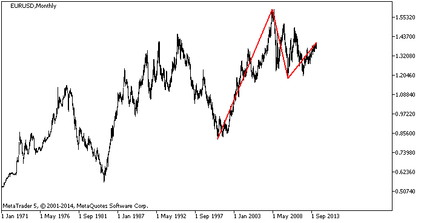

<!DOCTYPE html>
<html>
</html>
<head>
  <meta charset="utf-8">
  <meta http-equiv="X-UA-Compatible" content="IE=edge">
  <title>外汇站（fx-z.com） - 情绪分析</title>
  <meta name="description" content="">
  <meta name="viewport" content="width=device-width, initial-scale=1">
  <meta name="robots" content="all,follow">
  <!-- Bootstrap CSS-->
  <link rel="stylesheet" href="vendor/bootstrap/css/bootstrap.min.css">
  <!-- Font Awesome CSS-->
  <link rel="stylesheet" href="vendor/font-awesome/css/font-awesome.min.css">
  <!-- Google fonts - Roboto-->
  <link rel="stylesheet" href="https://fonts.googleapis.com/css?family=Roboto:400,300,700,400italic">
  <!-- owl carousel-->
  <link rel="stylesheet" href="vendor/owl.carousel/assets/owl.carousel.css">
  <link rel="stylesheet" href="vendor/owl.carousel/assets/owl.theme.default.css">
  <!-- theme stylesheet-->
  <link rel="stylesheet" href="css/style.default.css" id="theme-stylesheet">
  <!-- Custom stylesheet - for your changes-->
  <link rel="stylesheet" href="css/custom.css">
  <!-- Favicon-->
  <link rel="shortcut icon" href="img/favicon.png">
  <!-- Tweaks for older IEs--><!--[if lt IE 9]>
    <script src="https://oss.maxcdn.com/html5shiv/3.7.3/html5shiv.min.js"></script>
    <script src="https://oss.maxcdn.com/respond/1.4.2/respond.min.js"></script><![endif]-->
</head>
<body>
  <div id="all">
    <div class="container-fluid">
      <div class="row row-offcanvas row-offcanvas-left"> 
        <!--   *** SIDEBAR ***-->
        <div id="sidebar" class="col-md-4 col-lg-3 sidebar-offcanvas">
          <div class="sidebar-content">
            <h1 class="sidebar-heading"> <a href="https://fx-z.com">fx-z.com</a></h1>
            <p class="sidebar-p">介绍外汇相关的基本知识，告诉您如何进行自己的技术面和基本面分析，讲解先进的交易理念，并且为您阐述失败交易者与专业交易者之间的真正区别。 </p>
            <p class="sidebar-p">通过这些课程的学习，您将学会如何根据自己的优势来应用情绪分析，还将了解真实世界的事件会对货币汇率产生什么影响，央行在外汇市场中所发挥的作用，以及交易者在颇受欢迎的即期外汇交易中有哪些选择方案。 </p>
            <ul class="sidebar-menu">
                <!-- Link-->
                <li class="sidebar-item"><a href="https://fx-z.com" class="sidebar-link">首页</a></li>
                <!-- Link-->
                <li class="sidebar-item"><a href="cihui.html" class="sidebar-link">外汇词汇</a></li>
                <!-- Link-->
                <li class="sidebar-item"><a href="ebook.html" class="sidebar-link">获取外汇电子书</a></li>
            </ul>
            <p class="social"><a href="https://www.cn-forextime.com/zh?partner_id=4920383" target="_blank"data-animate-hover="pulse" class="external facebook"><i class="fa fa-eur"></i></a><a href="https://www.cn-forextime.com/zh?partner_id=4920383" target="_blank" data-animate-hover="pulse" class="external gplus"><i class="fa fa-gbp"></i></a><a href="https://www.cn-forextime.com/zh?partner_id=4920383" target="_blank" data-animate-hover="pulse" class="external twitter"><i class="fa fa-rmb"></i></a><a href="https://www.cn-forextime.com/zh?partner_id=4920383" target="_blank" title="" class="external instagram"><i class="fa fa-dollar"></i></a><a href="https://www.cn-forextime.com/zh?partner_id=4920383" target="_blank" data-animate-hover="pulse" class="email"><i class="fa fa-money"></i></a></p>
            <div class="copyright text-center text-md-left">
             
              
            </div>
          </div>
        </div>
        <!--   *** SIDEBAR END ***  -->
        <!--   *** DETAIL ***-->
        <div class="col-md-8 col-lg-9 content-column white-background">
          <div class="small-navbar d-flex d-md-none">
            <button type="button" data-toggle="offcanvas" class="btn btn-outline-primary"> <i class="fa fa-align-left mr-2"></i>菜单</button>
            <h1 class="small-navbar-heading"> <a href="https://fx-z.com/3-4.html">下一篇 </a></h1>
          </div>
          <div class="row">
            <div class="col-xl-10">
              <div class="content-column-content">
                <h1>情绪分析</h1>
       <p>
    我们采用以下三种分析方式来预测外汇价格，包括基本面分析、技术分析和情绪分析。其中，情绪分析是迄今为止最重要的分析方式。同时，由于它是一种群体心理，它也是最难以捉摸的。著名外汇投机商乔治·索罗斯在《金融炼金术》一书中提到情绪的首位重要性。
</p>
<p>
    我们成功与否取决于我们判断主流预期的能力，而不是判断真实行情动态的能力。
</p>
<p>
    例如，我们图表上的所有指标均显示 USD/JPY 被严重超卖，同时，基本面分析显示美元/日元被全面超卖，但美元/日元继续下跌。这时，市场情绪战胜了其他分析模式。GBP/USD 的情况同样如此——当交易者开始猎杀英镑时，无论技术指标和基本面因素怎样显示，硬币都会大幅下跌。
</p>
<p>
    市场情绪可能像脱缰的野马一样跑开，也可能像受惊的兔子一样掉转方向。这表明市场情绪存在短期变化与长期变化。确定市场情绪的问题之一在于区分两个时间间隔。整体而言，短期情绪恰如其名，不会持续太久。
</p>
<p>
    短期情绪可能造成临时性的调整回落，但通常会回到之前的长期走势。这是因为情绪基于预期，而且一旦预期形成后，他们倾向于保持固定。旧预期很难推翻。当市场情绪出现松动时，交易者应该检查 CFTC 交易员持仓报告和图表，但这些方法具有一定的误导性。实际上，我们总是在市场情绪发生变化之后才知情。长期情绪往往持续数月，甚至是数年。因此，我们很容易在总体行情图表上见到长期趋势。以下为欧元每月图表。欧元从 2000 年至 2008 年底一直上涨。这是一种支持欧元的情绪。
</p>
<p>
    截至 2014 年初 EUR/USD 每月图表
</p>
<p>
    EUR/USD 一直具有长期的上涨偏向且屡次证明这一点。我们推测，这是因为欧洲央行有控制通胀的职权，而且全球投资者相信其决心和能力——欧洲央行的信誉非常牢固。当欧洲央行降息时，即使降息是一项正确的货币政策，欧元仍摇摆不定并下跌。2013 年 10 月，欧元于 11 月降息之前下跌；2014 年 4 月 初，欧洲央行决策层并未采取降息措施但承诺准备降息，此时，欧元再次下跌。显然，当通胀接近零或者在某些成员国成为负数时，全球投资者对通胀的恐惧依然极为强烈，以至于欧元依然随着降息而被抛售（至少临时是如此）。但那些长期支持欧元偏向的交易者将在时机合适时做多欧元。
</p>
<p>
    当通胀接近零时，对通胀的恐惧是不理智的，而且显示出情绪的另一个特点——即它的基础是形成预期的模式或范例。几乎所有对于新数据的本能反应都能够以一种更谨慎、更周详的分析方式来辩论和反驳，但谨慎、周详的分析方式并非市场价格的驱动力。如果我们见到的行情与预期一致，那么占据上风的偏向几乎总能得到最新消息的证实，即使最新消息与偏向直接相悖。因此，您将见到新闻报道称，“英镑由于 xyz 低于预期而下跌”，或者“尽管 xyz 高于预期，英镑仍然下跌”。
</p>
<p>
    评估情绪时，重要的是要认可持之以恒的自我反馈循环——即索罗斯提到的“反身性”（其因果非常混乱）并未经过经济学家和理论家的研究，而且并无记者报道。正因如此，我们才说“您应该对读到的信息持有谨慎的态度”。我们经常见到财经报道提到某种情绪已经形成或即将形成，但其实这是作者的凭空捏造。这是某种胡编乱造或思维缺陷，但如果这一报道已经促成了预期偏向，则无论报道是否属实，交易者都会基于该报道进行交易。
</p>
<p>
    所以，成功的外汇交易者不会为了判断经济情况而预测 GDP、工资增长和其他核心数值等重要数据。这些是经济学家的工作范畴。外汇交易者只需了解舆论偏向以及该偏向所面临的威胁。一个典型示例是分析师悲观地认为量化宽松政策将持续许多年，而且这种分析占据上风。经过 QE1 和 QE2 之后，它们被命名为“QE 无限”。当市场于 2013 年 5 月引入 QE 缩减理念后，市场被错误定位且反应过度——收益率大幅上升，被成为“削减恐慌”。即使 2013 年最终开始缩减后，许多分析师认为新任联储主席的鸽派态度比前任的更明显，以至于削减幅度将变小或推迟。相反，美联储主席耶伦声称削减一定会按计划执行，而且加息将于削减结束 6 个月后立即开始，这比预期的加息时间提早数月，令所有人颇感震惊。
</p>
<p>
    耶伦的发言打破了反馈循环。但是对美联储进行谨慎、仔细的分析后，机构将指出这迟早会发生。实际上，量化宽松是一项优秀的措施。它干扰了自由市场，并且与所有政府干预措施一样引起了价格的偏离。价格的偏离将导致资源的错误分配。QE 对于所有西方（自由市场）经济学家而言都是不受欢迎的，而美联储受到专业自由市场经济学家的推崇。若是您认为美联储会冒着影响声誉和信赖度的风险将 QE 拖延更长的时间，那么您的想法是错误的。因此我们的短期预期（无限期延续 QE）与长期预期（尽快摆脱 QE）有一定的冲突。在本例中，我们需要预测“机构”特征，而不是任何具体的经济数据。
</p>
<p>
    <strong>不对称和过时的期望</strong>
</p>
<p>
    令人惊讶的是，即使市场情绪被证明是陈旧过时的，交易者依然执着地坚持该情绪。对于美联储削减 QE 的情绪或许已发生变化，但债券交易并不认为美国债券收益率将高于预期，也不认为美元能受益于提高后的收益率预期。直到欧洲央行宣布引入降息或其他激励措施，欧元才开始下跌。这正是外汇市场中一种极为常见的不对称表现。坏消息将巩固现有偏向，而好消息无法破坏现有偏向。可能需要大量与偏向相悖的信息才能使偏向逆转。例如，当反美元情绪占据上风时，美元与欧元区之间 100 个基点的收益率利差根本不够。
</p>
<p>
    我们如何察觉情绪的变化呢？我们需要有力的证据，而外汇中唯一的证据是 CFTC 交易者持仓报告。如果我们发现欧元净多头变为欧元净空头，我们就获得了证据——不是证明，而是证据。另一项关于情绪变化的信息来源是图表。如果我们见到动量偃旗息鼓——价格创下新高点但未创下更高的收盘价，MACD 背离和其他指标——我们可以猜测，交易者正在厌倦当前情绪。而且，如果有迹象显示情绪出现重大变化，整体历史支撑位和阻力位通常将被制定。
</p>
<p>
    当然，问题在于没有指标能告诉你走势会持续多久。在外汇行业中，判断价格变化究竟是调整型回落还是真正的情绪逆转是一个永恒的话题。这一示例能很好地说明为何单纯的分析师（不基于情绪交易，只根据图表事件和动态交易）处于劣势。如果您猜测长期情绪由于机构变化而发生变动，您可以在图表上仔细观察。
</p>
<p>
    <br/>
</p>
<p>
    <br/>
</p>
              </div>
            </div>
          </div>
        </div>
      </div>
    </div>
  </div>
  <!-- JavaScript files-->
  <script src="vendor/jquery/jquery.min.js"></script>
  <script src="vendor/popper.js/umd/popper.min.js"> </script>
  <script src="vendor/bootstrap/js/bootstrap.min.js"></script>
  <script src="vendor/jquery.cookie/jquery.cookie.js"> </script>
  <script src="vendor/owl.carousel/owl.carousel.min.js"></script>
  <script src="vendor/masonry-layout/masonry.pkgd.min.js"></script>
  <script src="js/front.js"></script>
</body>